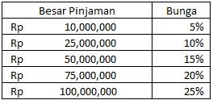
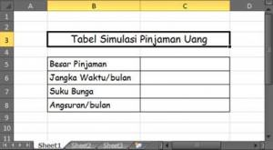
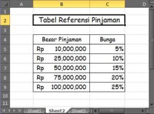
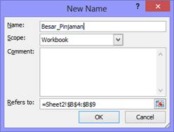
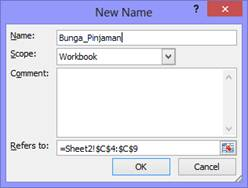
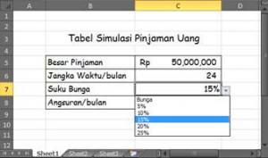
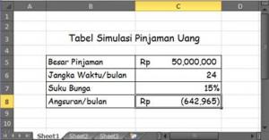
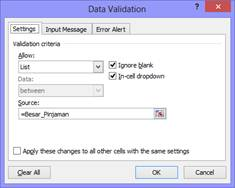

PMT: cicilan pinjaman per periode
PMT menghitung angsuran tetap tiap periode untuk pinjaman dengan bunga tetap.
=PMT(bunga; jumlah_periode; nilai_sekarang; [nilai_akhir]; [tipe])
| bunga | Suku bunga per periode (bunga tahunan / 12 untuk cicilan bulanan) |
|---|---|
| jumlah_periode | Banyak cicilan |
| nilai_sekarang | Jumlah pinjaman |
| nilai_akhir | Sisa yang diinginkan, default 0 |
| tipe | 0 = bayar akhir periode, 1 = awal periode |
Langkah praktik
- Pastikan bunga dan jumlah periode memakai satuan yang sama: bunga bulanan untuk cicilan bulanan.
- Ketik =PMT(B2/12;B3*12;B1) bila bunga tahunan di B2, tenor tahun di B3, pinjaman di B1.
- Hasilnya negatif karena itu uang keluar. Tambahkan tanda minus di depan bila ingin angka positif.
Tips
Jumlah total yang dibayar = cicilan x jumlah periode.
Tangkapan layar praktik







